| 日付 | 2014年12月23日（火） |
|---|---|
| 山域 | 道志山塊 |
| メンバー | 家族（妻、長女・3歳、長男・1歳） |
| 山行形態 | 子連れ日帰り |
| アクセス | 車 |
| ルート (Map) | 石割神社駐車場 (9:00) - (9:43) 石割神社 (9:49) - (10:13) 石割山 (10:52) - (11:36) 平尾山 - (12:24) 石割神社駐車場 |
石割山は富士山の展望台として有名だ。
手軽に登れることもあり人気の山である。
本日は冬休み直前の祝日のため、家でゆっくりしようと考えていたが
先の土日は山に行けずじまいであり、本日は絶好の快晴ということもあって
今年最後の山に出かけることにする。
駐車場に車を停める。標高1040m。すでに車は結構停まっている。
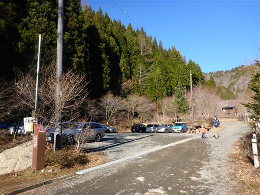
駐車場の側にある小さな橋を渡る。
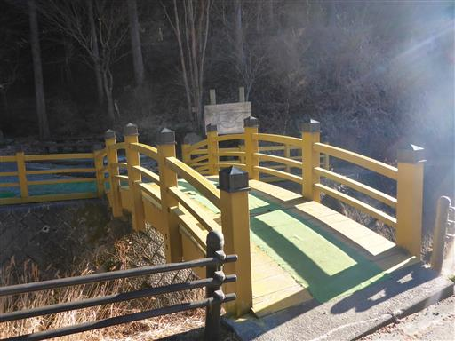
橋を渡った先にある赤い鳥居を潜って登山開始。
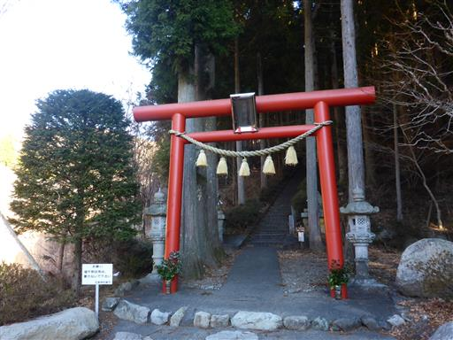
鳥居に先にあるのは、どこまでも続く長い長い階段。
先の方は良く見えないが、全部で403段あるらしい。
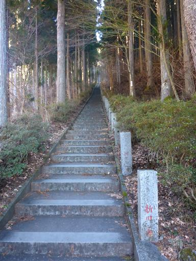
階段を登り終えたところに東屋が建っている。
まだ歩き始めて間もないので休憩せずに先に進む。
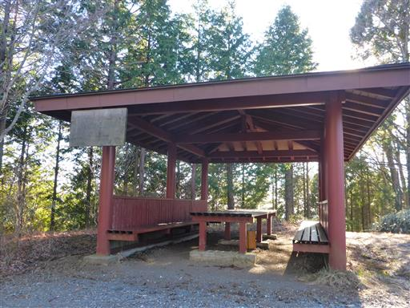
ここからは気持ちの良い登山道が続く。
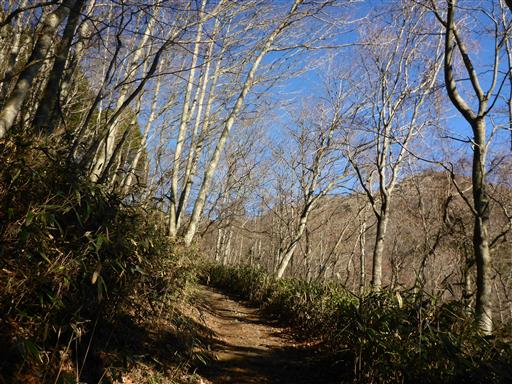
ブナの木が見られる。そこそこ大きな木だ。
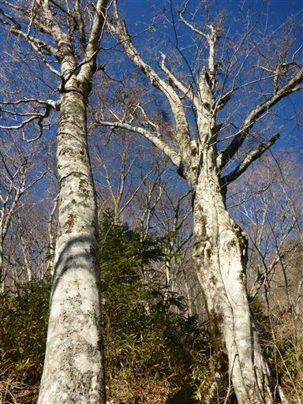
桂の御神木。立派な木ではあるが、御神木にしては小振りだ。
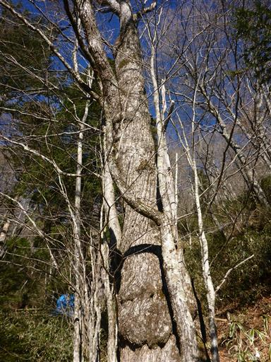
石割神社に到着する。
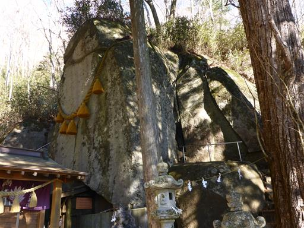
石割神社の名の由来になった大石。真ん中で縦に大きく割れている。
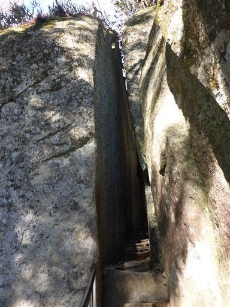
割れた石の隙間を通って、石を一周できるようになっている。
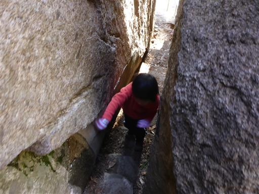
大石には太い綱が巻かれている。この石が石割神社の御神体となっているようだ。
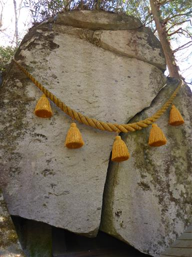
石割神社からは山頂まであと少し。最後の方は少し傾斜が急になり、はしごが現れる。
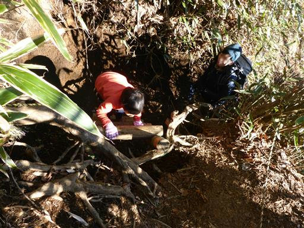
長い霜柱が散らばっている。斜面から落ちてきたのだろうか？
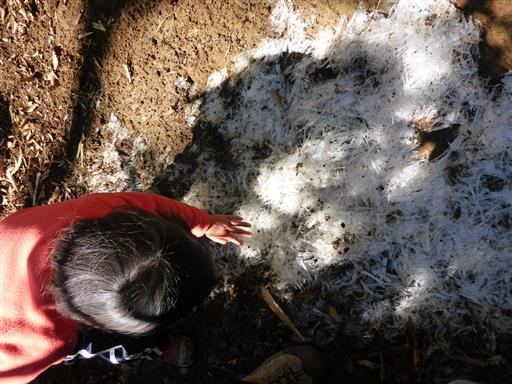
石割山の山頂に到着する。標高1413m。
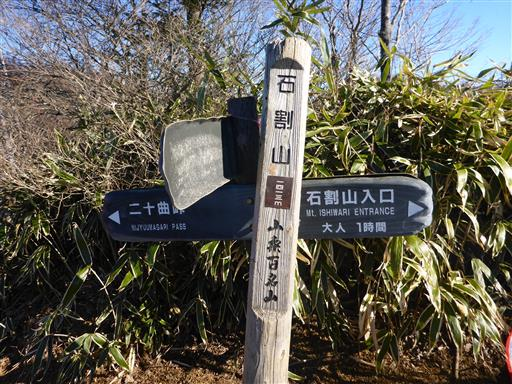
山頂からは目前に雄大な富士山が広がる。
今日は空気が澄んでいるため、美しい姿が望める。
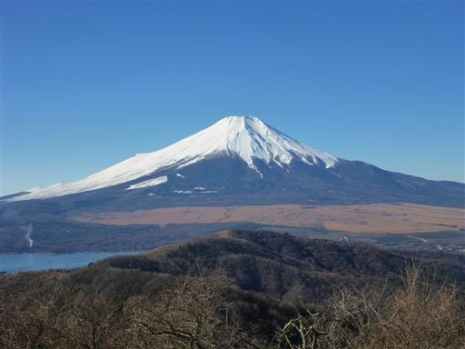
西方には南アルプスの山々が一列に並んでいる。
真白な白峰三山は良く目立つ。
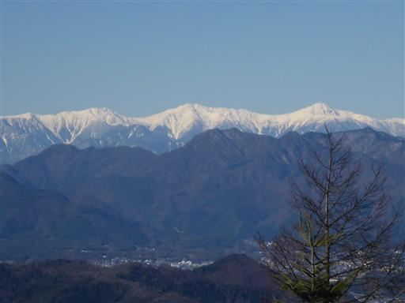
山頂一帯には霜柱が広がっている。
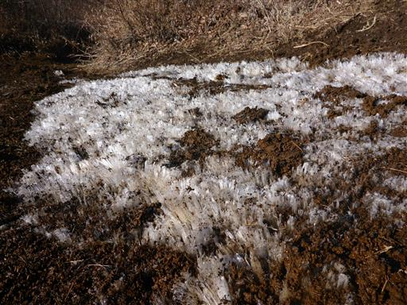
霜柱が解けたらドロドロになって大変なのだが、寒いため今のところ大丈夫そうだ。
山頂の一角に腰を下ろして昼食タイムにする。
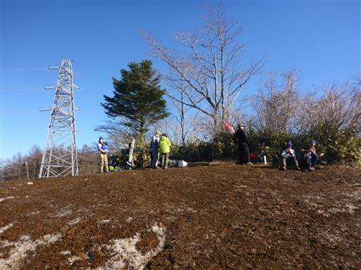
下りは登りとは別の道を歩く。こちらの道は傾斜のきつい坂道だ。
昼になって霜柱が解けてきたため、泥だらけで滑りやすい。

急斜面を下りきると、あとは緩やかな道が続く。
笹の葉が太陽の光を受けてピカピカ光っている。
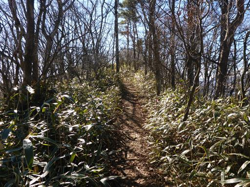
分岐点から5分ほど足を延ばして平尾山に寄り道する。
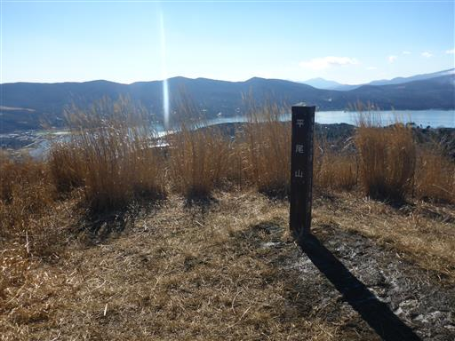
この山からも、もちろん富士山が見渡せる。
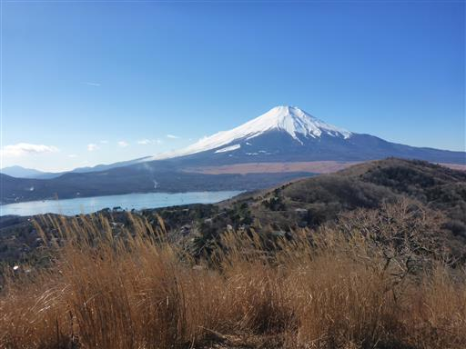
眼下に見えるのは山中湖。船が浮かんでいるのが小さく見える。
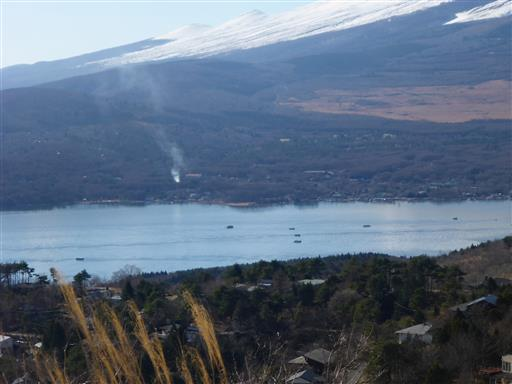
平尾山の先にも縦走路が続いているが、先に進むと行程が長くなるため、
分岐点まで戻って下山道に入っていく。
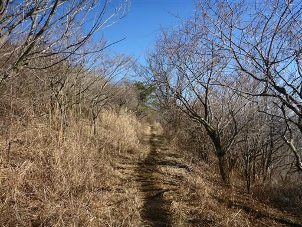
最後は僅かな車道歩きだ。右手に見えるダム湖は完全に凍りついている。
12月は山に登れていなかったため、今年最後の登り納めができて良かった。
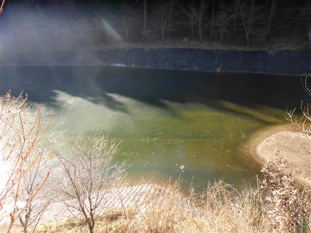